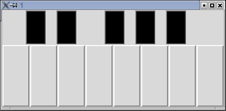

Piano
1 Getting the Frequencies for the Notes
After an internet search, I found the webpage
http://www.phy.mtu.edu/ suits/notefreqs.html which has a table of notes and their frequencies.
I scraped the data from the html with the following program:
x = readLines('http://www.phy.mtu.edu/~suits/notefreqs.html')
mylines = grep('<TD ALIGN=CENTER>',x,value=TRUE)
mylines = matrix(mylines,ncol=3,byrow=TRUE)[,-3]
mylines = apply(mylines,2,function(x)sub('<TD ALIGN=CENTER>(.*)</TD>','\\1',x))
mylines[,1] = sub('^([^0-9]+[0-9]).*$','\\1',mylines[,1])
notes = data.frame(gsub('</?su[pb]>','',mylines[,1]),as.numeric(mylines[,2]))
names(notes) = c('notes','freq')
library(sound)
thenotes = lapply(notes$freq,function(x)cutSampleEnds(Sawtooth(x,.3)))
names(thenotes) = notes$notes
save(thenotes,file='thenotes.rda')
It takes a bit of computation to set up all the notes properly,
so I saved the list of notes that I created with the save command.
This produces a binary representation of the data which R can load very
quickly. So instead of reading and calculating the frequencies every
time, I can quickly read them in when I need them.
2 The Piano
The first step is reading back the sounds stored in the last section
using the load command. I wrote a little wrapper around the
play command, because I needed to specify a program that was
capable of playing back the .wav files generated by the play
function that comes with the sound package. If you're going to
run this on your own computer, you can try to call play without the
command= argument, but you may have to find a command line program
to play back the wave files.
Here's the program:
require(tcltk)
require(sound)
load('thenotes.rda') # saved by the getfreq.r script
pnotes = c('C4','D4','E4','F4','G4','A4','B4','C5')
myplay = function(x)play(x,command='mplayer')
mfun = function(i){
ii = i
function(...)myplay(thenotes[[pnotes[ii]]])
}
main = tktoplevel()
black = tkframe(main)
tkpack(tklabel(black,width=2,height=4),side='left')
tkpack(tkbutton(black,width=2,height=4,bg='black',activebackground='black',command=function(...)myplay(thenotes[['C#4']])),side='left')
tkpack(tklabel(black,width=2,height=4),side='left')
tkpack(tkbutton(black,width=2,height=4,bg='black',activebackground='black',command=function(...)myplay(thenotes[['D#4']])),side='left')
tkpack(tklabel(black,width=7,height=4),side='left')
tkpack(tkbutton(black,width=2,height=4,bg='black',activebackground='black',command=function(...)myplay(thenotes[['F#4']])),side='left')
tkpack(tklabel(black,width=2,height=4),side='left')
tkpack(tkbutton(black,width=2,height=4,bg='black',activebackground='black',command=function(...)myplay(thenotes[['G#4']])),side='left')
tkpack(tklabel(black,width=2,height=4),side='left')
tkpack(tkbutton(black,width=2,height=4,bg='black',activebackground='black',command=function(...)myplay(thenotes[['A#4']])),side='left')
tkpack(tklabel(black,width=6,height=4),side='left')
tkpack(black)
white = tkframe(main)
for(i in 1:8)tkpack(tkbutton(white,width=4,height=8,command=mfun(i)),side='left')
tkpack(white)
I created the piano with two main frames, black and white,
to hold the black keys and the white keys, respectively. To get (approximately)
correct spacing of the black keys, I inserted empty labels between the
buttons that represent the black keys. Each button has a command associated
with it to play the note of the appropriate frequency.
Here's how the piano looks:

File translated from
TEX
by
TTH,
version 3.67.
On 13 Apr 2009, 15:42.